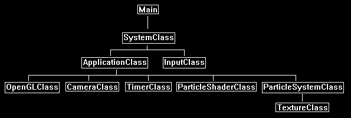

This tutorial will cover how to create particle systems in OpenGL 4.0 using GLSL and C++.
Particles are usually made by using a single texture placed on a quad.
And then that quad is rendered hundreds of times each frame using some basic physics to mimic things such as snow, rain, smoke, fire, foliage, and numerous other systems that are generally made up of many small but similar elements.
In this particle tutorial we will use a single diamond texture and render it hundreds of times each frame to create a colorful diamond waterfall style effect.
Additionally, we will also use blending to blend the particles together so that layered particles cumulatively add their color to each other.
Make sure to also read the summary after going over the tutorial as that is where I explain how to expand this basic particle system into a more advanced, robust, and efficient implementation.
Framework
The frame work for this tutorial has the basics as usual.
It also uses the TimerClass for timing when to emit new particles.
The new class used for shading the particles is called ParticleShaderClass.
And finally, the new particle system itself is encapsulated in the ParticleSystemClass.

We will start the code section by looking at the particle shader first.
Particle.vs
The particle.vs and particle.ps GLSL shader programs are what we use to render the particles.
They are the basic texture shader with an added color modifying component.
////////////////////////////////////////////////////////////////////////////////
// Filename: particle.vs
////////////////////////////////////////////////////////////////////////////////
#version 400
The input and output vertex variables both have a color component so that the particle can have an individual color that is added to the texture base color.
/////////////////////
// INPUT VARIABLES //
/////////////////////
in vec3 inputPosition;
in vec2 inputTexCoord;
in vec4 inputColor;
//////////////////////
// OUTPUT VARIABLES //
//////////////////////
out vec2 texCoord;
out vec4 pixColor;
///////////////////////
// UNIFORM VARIABLES //
///////////////////////
uniform mat4 worldMatrix;
uniform mat4 viewMatrix;
uniform mat4 projectionMatrix;
////////////////////////////////////////////////////////////////////////////////
// Vertex Shader
////////////////////////////////////////////////////////////////////////////////
void main(void)
{
// Calculate the position of the vertex against the world, view, and projection matrices.
gl_Position = vec4(inputPosition, 1.0f) * worldMatrix;
gl_Position = gl_Position * viewMatrix;
gl_Position = gl_Position * projectionMatrix;
// Store the texture coordinates for the pixel shader.
texCoord = inputTexCoord;
The color is sent through to the pixel shader here.
// Store the color for the pixel shader.
pixColor = inputColor;
}
Particle.ps
////////////////////////////////////////////////////////////////////////////////
// Filename: particle.ps
////////////////////////////////////////////////////////////////////////////////
#version 400
The input variables have the added color component in the pixel shader also.
/////////////////////
// INPUT VARIABLES //
/////////////////////
in vec2 texCoord;
in vec4 pixColor;
//////////////////////
// OUTPUT VARIABLES //
//////////////////////
out vec4 outputColor;
///////////////////////
// UNIFORM VARIABLES //
///////////////////////
uniform sampler2D shaderTexture;
////////////////////////////////////////////////////////////////////////////////
// Pixel Shader
////////////////////////////////////////////////////////////////////////////////
void main(void)
{
vec4 textureColor;
// Sample the pixel color from the texture using the sampler at this texture coordinate location.
textureColor = texture(shaderTexture, texCoord);
Here is where we combine the texture color and the input particle color to get the final output color.
// Combine the texture color and the particle color to get the final color result.
outputColor = textureColor * pixColor;
}
Particleshaderclass.h
The ParticleShaderClass is just the TextureShaderClass modified to handle a color component for the particles.
////////////////////////////////////////////////////////////////////////////////
// Filename: particleshaderclass.h
////////////////////////////////////////////////////////////////////////////////
#ifndef _PARTICLESHADERCLASS_H_
#define _PARTICLESHADERCLASS_H_
//////////////
// INCLUDES //
//////////////
#include <iostream>
using namespace std;
///////////////////////
// MY CLASS INCLUDES //
///////////////////////
#include "openglclass.h"
////////////////////////////////////////////////////////////////////////////////
// Class name: ParticleShaderClass
////////////////////////////////////////////////////////////////////////////////
class ParticleShaderClass
{
public:
ParticleShaderClass();
ParticleShaderClass(const ParticleShaderClass&);
~ParticleShaderClass();
bool Initialize(OpenGLClass*);
void Shutdown();
bool SetShaderParameters(float*, float*, float*);
private:
bool InitializeShader(char*, char*);
void ShutdownShader();
char* LoadShaderSourceFile(char*);
void OutputShaderErrorMessage(unsigned int, char*);
void OutputLinkerErrorMessage(unsigned int);
private:
OpenGLClass* m_OpenGLPtr;
unsigned int m_vertexShader;
unsigned int m_fragmentShader;
unsigned int m_shaderProgram;
};
#endif
Particleshaderclass.cpp
////////////////////////////////////////////////////////////////////////////////
// Filename: particleshaderclass.cpp
////////////////////////////////////////////////////////////////////////////////
#include "particleshaderclass.h"
ParticleShaderClass::ParticleShaderClass()
{
m_OpenGLPtr = 0;
}
ParticleShaderClass::ParticleShaderClass(const ParticleShaderClass& other)
{
}
ParticleShaderClass::~ParticleShaderClass()
{
}
bool ParticleShaderClass::Initialize(OpenGLClass* OpenGL)
{
char vsFilename[128];
char psFilename[128];
bool result;
// Store the pointer to the OpenGL object.
m_OpenGLPtr = OpenGL;
We load the particle.vs and particle.ps GLSL shader files here.
// Set the location and names of the shader files.
strcpy(vsFilename, "../Engine/particle.vs");
strcpy(psFilename, "../Engine/particle.ps");
// Initialize the vertex and pixel shaders.
result = InitializeShader(vsFilename, psFilename);
if(!result)
{
return false;
}
return true;
}
void ParticleShaderClass::Shutdown()
{
// Shutdown the shader.
ShutdownShader();
// Release the pointer to the OpenGL object.
m_OpenGLPtr = 0;
return;
}
bool ParticleShaderClass::InitializeShader(char* vsFilename, char* fsFilename)
{
const char* vertexShaderBuffer;
const char* fragmentShaderBuffer;
int status;
// Load the vertex shader source file into a text buffer.
vertexShaderBuffer = LoadShaderSourceFile(vsFilename);
if(!vertexShaderBuffer)
{
return false;
}
// Load the fragment shader source file into a text buffer.
fragmentShaderBuffer = LoadShaderSourceFile(fsFilename);
if(!fragmentShaderBuffer)
{
return false;
}
// Create a vertex and fragment shader object.
m_vertexShader = m_OpenGLPtr->glCreateShader(GL_VERTEX_SHADER);
m_fragmentShader = m_OpenGLPtr->glCreateShader(GL_FRAGMENT_SHADER);
// Copy the shader source code strings into the vertex and fragment shader objects.
m_OpenGLPtr->glShaderSource(m_vertexShader, 1, &vertexShaderBuffer, NULL);
m_OpenGLPtr->glShaderSource(m_fragmentShader, 1, &fragmentShaderBuffer, NULL);
// Release the vertex and fragment shader buffers.
delete [] vertexShaderBuffer;
vertexShaderBuffer = 0;
delete [] fragmentShaderBuffer;
fragmentShaderBuffer = 0;
// Compile the shaders.
m_OpenGLPtr->glCompileShader(m_vertexShader);
m_OpenGLPtr->glCompileShader(m_fragmentShader);
// Check to see if the vertex shader compiled successfully.
m_OpenGLPtr->glGetShaderiv(m_vertexShader, GL_COMPILE_STATUS, &status);
if(status != 1)
{
// If it did not compile then write the syntax error message out to a text file for review.
OutputShaderErrorMessage(m_vertexShader, vsFilename);
return false;
}
// Check to see if the fragment shader compiled successfully.
m_OpenGLPtr->glGetShaderiv(m_fragmentShader, GL_COMPILE_STATUS, &status);
if(status != 1)
{
// If it did not compile then write the syntax error message out to a text file for review.
OutputShaderErrorMessage(m_fragmentShader, fsFilename);
return false;
}
// Create a shader program object.
m_shaderProgram = m_OpenGLPtr->glCreateProgram();
// Attach the vertex and fragment shader to the program object.
m_OpenGLPtr->glAttachShader(m_shaderProgram, m_vertexShader);
m_OpenGLPtr->glAttachShader(m_shaderProgram, m_fragmentShader);
Set the 3rd part of the vertex input structure to be the color of the particle.
// Bind the shader input variables.
m_OpenGLPtr->glBindAttribLocation(m_shaderProgram, 0, "inputPosition");
m_OpenGLPtr->glBindAttribLocation(m_shaderProgram, 1, "inputTexCoord");
m_OpenGLPtr->glBindAttribLocation(m_shaderProgram, 2, "inputColor");
// Link the shader program.
m_OpenGLPtr->glLinkProgram(m_shaderProgram);
// Check the status of the link.
m_OpenGLPtr->glGetProgramiv(m_shaderProgram, GL_LINK_STATUS, &status);
if(status != 1)
{
// If it did not link then write the syntax error message out to a text file for review.
OutputLinkerErrorMessage(m_shaderProgram);
return false;
}
return true;
}
void ParticleShaderClass::ShutdownShader()
{
// Detach the vertex and fragment shaders from the program.
m_OpenGLPtr->glDetachShader(m_shaderProgram, m_vertexShader);
m_OpenGLPtr->glDetachShader(m_shaderProgram, m_fragmentShader);
// Delete the vertex and fragment shaders.
m_OpenGLPtr->glDeleteShader(m_vertexShader);
m_OpenGLPtr->glDeleteShader(m_fragmentShader);
// Delete the shader program.
m_OpenGLPtr->glDeleteProgram(m_shaderProgram);
return;
}
char* ParticleShaderClass::LoadShaderSourceFile(char* filename)
{
FILE* filePtr;
char* buffer;
long fileSize, count;
int error;
// Open the shader file for reading in text modee.
filePtr = fopen(filename, "r");
if(filePtr == NULL)
{
return 0;
}
// Go to the end of the file and get the size of the file.
fseek(filePtr, 0, SEEK_END);
fileSize = ftell(filePtr);
// Initialize the buffer to read the shader source file into, adding 1 for an extra null terminator.
buffer = new char[fileSize + 1];
// Return the file pointer back to the beginning of the file.
fseek(filePtr, 0, SEEK_SET);
// Read the shader text file into the buffer.
count = fread(buffer, 1, fileSize, filePtr);
if(count != fileSize)
{
return 0;
}
// Close the file.
error = fclose(filePtr);
if(error != 0)
{
return 0;
}
// Null terminate the buffer.
buffer[fileSize] = '\0';
return buffer;
}
void ParticleShaderClass::OutputShaderErrorMessage(unsigned int shaderId, char* shaderFilename)
{
long count;
int logSize, error;
char* infoLog;
FILE* filePtr;
// Get the size of the string containing the information log for the failed shader compilation message.
m_OpenGLPtr->glGetShaderiv(shaderId, GL_INFO_LOG_LENGTH, &logSize);
// Increment the size by one to handle also the null terminator.
logSize++;
// Create a char buffer to hold the info log.
infoLog = new char[logSize];
// Now retrieve the info log.
m_OpenGLPtr->glGetShaderInfoLog(shaderId, logSize, NULL, infoLog);
// Open a text file to write the error message to.
filePtr = fopen("shader-error.txt", "w");
if(filePtr == NULL)
{
cout << "Error opening shader error message output file." << endl;
return;
}
// Write out the error message.
count = fwrite(infoLog, sizeof(char), logSize, filePtr);
if(count != logSize)
{
cout << "Error writing shader error message output file." << endl;
return;
}
// Close the file.
error = fclose(filePtr);
if(error != 0)
{
cout << "Error closing shader error message output file." << endl;
return;
}
// Notify the user to check the text file for compile errors.
cout << "Error compiling shader. Check shader-error.txt for error message. Shader filename: " << shaderFilename << endl;
return;
}
void ParticleShaderClass::OutputLinkerErrorMessage(unsigned int programId)
{
long count;
FILE* filePtr;
int logSize, error;
char* infoLog;
// Get the size of the string containing the information log for the failed shader compilation message.
m_OpenGLPtr->glGetProgramiv(programId, GL_INFO_LOG_LENGTH, &logSize);
// Increment the size by one to handle also the null terminator.
logSize++;
// Create a char buffer to hold the info log.
infoLog = new char[logSize];
// Now retrieve the info log.
m_OpenGLPtr->glGetProgramInfoLog(programId, logSize, NULL, infoLog);
// Open a file to write the error message to.
filePtr = fopen("linker-error.txt", "w");
if(filePtr == NULL)
{
cout << "Error opening linker error message output file." << endl;
return;
}
// Write out the error message.
count = fwrite(infoLog, sizeof(char), logSize, filePtr);
if(count != logSize)
{
cout << "Error writing linker error message output file." << endl;
return;
}
// Close the file.
error = fclose(filePtr);
if(error != 0)
{
cout << "Error closing linker error message output file." << endl;
return;
}
// Pop a message up on the screen to notify the user to check the text file for linker errors.
cout << "Error linking shader program. Check linker-error.txt for message." << endl;
return;
}
The SetShaderParameters is the same as the texture shader class since we only set the three matrices and the texture.
bool ParticleShaderClass::SetShaderParameters(float* worldMatrix, float* viewMatrix, float* projectionMatrix)
{
float tpWorldMatrix[16], tpViewMatrix[16], tpProjectionMatrix[16];
int location;
// Transpose the matrices to prepare them for the shader.
m_OpenGLPtr->MatrixTranspose(tpWorldMatrix, worldMatrix);
m_OpenGLPtr->MatrixTranspose(tpViewMatrix, viewMatrix);
m_OpenGLPtr->MatrixTranspose(tpProjectionMatrix, projectionMatrix);
// Install the shader program as part of the current rendering state.
m_OpenGLPtr->glUseProgram(m_shaderProgram);
// Set the world matrix in the vertex shader.
location = m_OpenGLPtr->glGetUniformLocation(m_shaderProgram, "worldMatrix");
if(location == -1)
{
cout << "World matrix not set." << endl;
}
m_OpenGLPtr->glUniformMatrix4fv(location, 1, false, tpWorldMatrix);
// Set the view matrix in the vertex shader.
location = m_OpenGLPtr->glGetUniformLocation(m_shaderProgram, "viewMatrix");
if(location == -1)
{
cout << "View matrix not set." << endl;
}
m_OpenGLPtr->glUniformMatrix4fv(location, 1, false, tpViewMatrix);
// Set the projection matrix in the vertex shader.
location = m_OpenGLPtr->glGetUniformLocation(m_shaderProgram, "projectionMatrix");
if(location == -1)
{
cout << "Projection matrix not set." << endl;
}
m_OpenGLPtr->glUniformMatrix4fv(location, 1, false, tpProjectionMatrix);
// Set the texture in the pixel shader to use the data from the first texture unit.
location = m_OpenGLPtr->glGetUniformLocation(m_shaderProgram, "shaderTexture");
if(location == -1)
{
cout << "Shader texture not set." << endl;
}
m_OpenGLPtr->glUniform1i(location, 0);
return true;
}
Particlesystemclass.h
////////////////////////////////////////////////////////////////////////////////
// Filename: particlesystemclass.h
////////////////////////////////////////////////////////////////////////////////
#ifndef _PARTICLESYSTEMCLASS_H_
#define _PARTICLESYSTEMCLASS_H_
///////////////////////
// MY CLASS INCLUDES //
///////////////////////
#include "textureclass.h"
////////////////////////////////////////////////////////////////////////////////
// Class Name: ParticleSystemClass
////////////////////////////////////////////////////////////////////////////////
class ParticleSystemClass
{
private:
The VertexType for rendering particles just requires position, texture coordinates, and color to match up with the ParticleType properties.
struct VertexType
{
float x, y, z;
float tu, tv;
float red, green, blue, alpha;
};
Particles can have any number of properties that define them.
In this implementation we put all the properties of a particle in the ParticleType structure.
You can add many more but for this tutorial I am just going to cover position, speed, and color.
struct ParticleType
{
float positionX, positionY, positionZ;
float red, green, blue;
float velocity;
bool active;
};
public:
ParticleSystemClass();
ParticleSystemClass(const ParticleSystemClass&);
~ParticleSystemClass();
The class functions are the regular initialize, shutdown, frame, and render.
However, note that the Frame function is where we do all the work of updating, sorting, and rebuilding the of vertex buffer each frame so the particles can be rendered correctly.
bool Initialize(OpenGLClass*, char*);
void Shutdown();
void Frame(float);
void Render();
private:
bool LoadTexture(char*, bool);
void ReleaseTexture();
void InitializeParticleSystem();
void ShutdownParticleSystem();
void InitializeBuffers();
void ShutdownBuffers();
void RenderBuffers();
void EmitParticles(float);
void UpdateParticles(float);
void KillParticles();
void UpdateBuffers();
private:
OpenGLClass* m_OpenGLPtr;
We use a single texture for all the particles in this tutorial.
TextureClass* m_Texture;
The particle system is an array of particles made up from the ParticleType structure.
ParticleType* m_particleList;
VertexType* m_vertices;
The following private class variables are the ones used for the particle properties.
They define how the particle system will work and changing each of them has a unique effect on how the particle system will react.
If you plan to add more functionality to the particle system you would add it here by using additional variables for modifying the particles.
float m_particleDeviationX, m_particleDeviationY, m_particleDeviationZ;
float m_particleVelocity, m_particleVelocityVariation;
float m_particleSize;
int m_particlesPerSecond, m_maxParticles;
int m_currentParticleCount;
float m_accumulatedTime;
The remaining variables are for setting up a single vertex and index buffer.
Note that the vertex buffer will be dynamic since it will change all particle positions each frame.
int m_vertexCount, m_indexCount;
unsigned int m_vertexArrayId, m_vertexBufferId, m_indexBufferId;
};
#endif
Particlesystemclass.cpp
////////////////////////////////////////////////////////////////////////////////
// Filename: particlesystemclass.cpp
////////////////////////////////////////////////////////////////////////////////
#include "particlesystemclass.h"
The class constructor initializes the private member variables to null.
ParticleSystemClass::ParticleSystemClass()
{
m_OpenGLPtr = 0;
m_Texture = 0;
m_particleList = 0;
m_vertices = 0;
}
ParticleSystemClass::ParticleSystemClass(const ParticleSystemClass& other)
{
}
ParticleSystemClass::~ParticleSystemClass()
{
}
The Initialize function first loads the texture that will be used for the particles.
After the texture is loaded it then initializes the particle system.
Once the particle system has been initialized it then creates the initial empty vertex and index buffers.
The buffers are created empty at first as there are no particles emitted yet.
bool ParticleSystemClass::Initialize(OpenGLClass* OpenGL, char* textureFilename)
{
bool result;
// Store a pointer to the OpenGL object.
m_OpenGLPtr = OpenGL;
// Load the texture that is used for the particles.
result = LoadTexture(textureFilename, false);
if(!result)
{
return false;
}
// Initialize the particle system.
InitializeParticleSystem();
// Create the buffers that will be used to render the particles with.
InitializeBuffers();
return true;
}
The Shutdown function releases the buffers, particle system, and particle texture.
void ParticleSystemClass::Shutdown()
{
// Release the buffers.
ShutdownBuffers();
// Release the particle system.
ShutdownParticleSystem();
// Release the texture used for the particles.
ReleaseTexture();
// Release the pointer to the OpenGL object.
m_OpenGLPtr = 0;
return;
}
The Frame function is where we do the majority of the particle system work.
Each frame we first check if we need to clear some of the particles that have reached the end of their render life.
Secondly, we emit new particles if it is time to do so.
After we emit new particles, we then update all the particles that are currently emitted, in this tutorial we update their height position to create a falling effect.
After the particles have been updated, we then need to update the vertex buffer with the updated location of each particle.
The vertex buffer is dynamic so updating it is easy to do.
void ParticleSystemClass::Frame(float frameTime)
{
// Release old particles.
KillParticles();
// Emit new particles.
EmitParticles(frameTime);
// Update the position of the particles.
UpdateParticles(frameTime);
// Update the dynamic vertex buffer with the new position of each particle.
UpdateBuffers();
return;
}
The Render function first sets the texture for all particles.
After that it calls the RenderBuffers private function to render the particles.
void ParticleSystemClass::Render()
{
// Set the texture for the particles.
m_Texture->SetTexture(m_OpenGLPtr, 0);
// Put the vertex and index buffers on the graphics pipeline to prepare them for drawing.
RenderBuffers();
return;
}
LoadTexture loads the star01.tga file into a texture resource that can be used for rendering the particles.
bool ParticleSystemClass::LoadTexture(char* textureFilename, bool wrap)
{
bool result;
// Create and initialize the texture object.
m_Texture = new TextureClass;
result = m_Texture->Initialize(m_OpenGLPtr, textureFilename, 0, wrap);
if(!result)
{
return false;
}
return true;
}
ReleaseTexture releases the texture resource that was used for rendering the particles.
void ParticleSystemClass::ReleaseTexture()
{
// Release the texture object.
if(m_Texture)
{
m_Texture->Shutdown();
delete m_Texture;
m_Texture = 0;
}
return;
}
The InitializeParticleSystem is where we initialize all the parameters and the particle system to be ready for frame processing.
void ParticleSystemClass::InitializeParticleSystem()
{
int i;
We start by initializing all the different elements that will be used for the particle properties.
For this particle system we set the random deviation of where the particles will spawn in terms of location.
We also set the speed they will fall at and the random deviation of speed for each particle.
After that we set the size of the particles.
And finally, we set how many particles will be emitted every second as well as the total amount of particles allowed in the system at one time.
// Set the random deviation of where the particles can be located when emitted.
m_particleDeviationX = 0.5f;
m_particleDeviationY = 0.1f;
m_particleDeviationZ = 2.0f;
// Set the speed and speed variation of particles.
m_particleVelocity = 1.0f;
m_particleVelocityVariation = 0.2f;
// Set the physical size of the particles.
m_particleSize = 0.2f;
// Set the number of particles to emit per second.
m_particlesPerSecond = 100;
// Set the maximum number of particles allowed in the particle system.
m_maxParticles = 1000;
We then create the particle array based on the maximum number of particles that will be used.
// Create the particle list.
m_particleList = new ParticleType[m_maxParticles];
Set each particle in the array to inactive to begin with.
// Initialize the particle list.
for(i=0; i<m_maxParticles; i++)
{
m_particleList[i].active = false;
}
Initialize the two counters to zero to start with.
// Initialize the current particle count to zero since none are emitted yet.
m_currentParticleCount = 0;
// Clear the initial accumulated time for the particle per second emission rate.
m_accumulatedTime = 0.0f;
return;
}
The ShutdownParticleSystem function releases the particle array during shutdown.
void ParticleSystemClass::ShutdownParticleSystem()
{
// Release the particle list.
if(m_particleList)
{
delete [] m_particleList;
m_particleList = 0;
}
return;
}
InitializeBuffers prepares the vertex and index buffer that will be used for rendering the particles.
As the particles will be updated every frame the vertex buffer will need to be created as a dynamic buffer.
At the beginning there are no particles emitted so the vertex buffer will be created empty.
void ParticleSystemClass::InitializeBuffers()
{
unsigned int* indices;
int i;
// Set the maximum number of vertices in the vertex array.
m_vertexCount = m_maxParticles * 6;
// Set the maximum number of indices in the index array.
m_indexCount = m_vertexCount;
// Create the vertex array.
m_vertices = new VertexType[m_vertexCount];
// Create the index array.
indices = new unsigned int[m_indexCount];
// Initialize vertex array to zeros at first.
memset(m_vertices, 0, (sizeof(VertexType) * m_vertexCount));
// Initialize the index array.
for(i=0; i<m_indexCount; i++)
{
indices[i] = i;
}
// Allocate an OpenGL vertex array object.
m_OpenGLPtr->glGenVertexArrays(1, &m_vertexArrayId);
// Bind the vertex array object to store all the buffers and vertex attributes we create here.
m_OpenGLPtr->glBindVertexArray(m_vertexArrayId);
// Generate an ID for the vertex buffer.
m_OpenGLPtr->glGenBuffers(1, &m_vertexBufferId);
Set the vertex buffer to dynamic.
// Bind the vertex buffer and load the vertex data into the vertex buffer.
m_OpenGLPtr->glBindBuffer(GL_ARRAY_BUFFER, m_vertexBufferId);
m_OpenGLPtr->glBufferData(GL_ARRAY_BUFFER, m_vertexCount * sizeof(VertexType), m_vertices, GL_DYNAMIC_DRAW);
Set the three vertex array attributes including the new color attribute.
// Enable the three vertex array attributes.
m_OpenGLPtr->glEnableVertexAttribArray(0); // Vertex position.
m_OpenGLPtr->glEnableVertexAttribArray(1); // Texture coordinates.
m_OpenGLPtr->glEnableVertexAttribArray(2); // Color
// Specify the location and format of the position portion of the vertex buffer.
m_OpenGLPtr->glVertexAttribPointer(0, 3, GL_FLOAT, false, sizeof(VertexType), 0);
// Specify the location and format of the texture coordinates portion of the vertex buffer.
m_OpenGLPtr->glVertexAttribPointer(1, 2, GL_FLOAT, false, sizeof(VertexType), (unsigned char*)NULL + (3 * sizeof(float)));
Set the color attribute as a 4-float size.
// Specify the location and format of the color portion of the vertex buffer.
m_OpenGLPtr->glVertexAttribPointer(2, 4, GL_FLOAT, false, sizeof(VertexType), (unsigned char*)NULL + (5 * sizeof(float)));
// Generate an ID for the index buffer.
m_OpenGLPtr->glGenBuffers(1, &m_indexBufferId);
The index buffer can stay static since the data in it never changes.
// Bind the index buffer and load the index data into it.
m_OpenGLPtr->glBindBuffer(GL_ELEMENT_ARRAY_BUFFER, m_indexBufferId);
m_OpenGLPtr->glBufferData(GL_ELEMENT_ARRAY_BUFFER, m_indexCount* sizeof(unsigned int), indices, GL_STATIC_DRAW);
// Now that the buffers have been loaded we can release the array data.
delete [] indices;
indices = 0;
return;
}
The ShutdownBuffers function releases the vertex and index buffer during shutdown.
void ParticleSystemClass::ShutdownBuffers()
{
// Release the vertex array object.
m_OpenGLPtr->glBindVertexArray(0);
m_OpenGLPtr->glDeleteVertexArrays(1, &m_vertexArrayId);
// Release the vertex buffer.
m_OpenGLPtr->glBindBuffer(GL_ARRAY_BUFFER, 0);
m_OpenGLPtr->glDeleteBuffers(1, &m_vertexBufferId);
// Release the index buffer.
m_OpenGLPtr->glBindBuffer(GL_ELEMENT_ARRAY_BUFFER, 0);
m_OpenGLPtr->glDeleteBuffers(1, &m_indexBufferId);
// Release the vertices.
if(m_vertices)
{
delete [] m_vertices;
m_vertices = 0;
}
return;
}
RenderBuffers is used to draw the particle buffers.
It places the geometry on the pipeline so that the shader can render it.
void ParticleSystemClass::RenderBuffers()
{
// Bind the vertex array object that stored all the information about the vertex and index buffers.
m_OpenGLPtr->glBindVertexArray(m_vertexArrayId);
// Render the vertex buffer using the index buffer.
glDrawElements(GL_TRIANGLES, m_indexCount, GL_UNSIGNED_INT, 0);
return;
}
EmitParticles is called each frame to emit new particles.
It determines when to emit a particle based on the frame time and the particles per second variable.
If there is a new particle to be emitted then the new particle is created and its properties are set.
After that it is inserted into the particle array in Z depth order.
The particle array needs to be sorted in correct depth order for rendering to work using an alpha blend.
If it is not sorted you will get some visual artifacts.
void ParticleSystemClass::EmitParticles(float frameTime)
{
bool emitParticle, found;
float positionX, positionY, positionZ, velocity, red, green, blue;
int index, i, j;
// Increment the frame time.
m_accumulatedTime += frameTime;
// Set emit particle to false for now.
emitParticle = false;
// Check if it is time to emit a new particle or not.
if(m_accumulatedTime > (1.0f / (float)m_particlesPerSecond))
{
m_accumulatedTime = 0.0f;
emitParticle = true;
}
// If there are particles to emit then emit one per frame.
if((emitParticle == true) && (m_currentParticleCount < (m_maxParticles - 1)))
{
m_currentParticleCount++;
// Now generate the randomized particle properties.
positionX = (((float)rand() - (float)rand())/RAND_MAX) * m_particleDeviationX;
positionY = (((float)rand() - (float)rand())/RAND_MAX) * m_particleDeviationY;
positionZ = (((float)rand() - (float)rand())/RAND_MAX) * m_particleDeviationZ;
velocity = m_particleVelocity + (((float)rand()-(float)rand())/RAND_MAX) * m_particleVelocityVariation;
red = (((float)rand() - (float)rand())/RAND_MAX) + 0.5f;
green = (((float)rand() - (float)rand())/RAND_MAX) + 0.5f;
blue = (((float)rand() - (float)rand())/RAND_MAX) + 0.5f;
// Now since the particles need to be rendered from back to front for blending we have to sort the particle array.
// We will sort using Z depth so we need to find where in the list the particle should be inserted.
index = 0;
found = false;
while(!found)
{
if((m_particleList[index].active == false) || (m_particleList[index].positionZ < positionZ))
{
found = true;
}
else
{
index++;
}
}
// Now that we know the location to insert into we need to copy the array over by one position from the index to make room for the new particle.
i = m_currentParticleCount;
j = i - 1;
while(i != index)
{
m_particleList[i].positionX = m_particleList[j].positionX;
m_particleList[i].positionY = m_particleList[j].positionY;
m_particleList[i].positionZ = m_particleList[j].positionZ;
m_particleList[i].red = m_particleList[j].red;
m_particleList[i].green = m_particleList[j].green;
m_particleList[i].blue = m_particleList[j].blue;
m_particleList[i].velocity = m_particleList[j].velocity;
m_particleList[i].active = m_particleList[j].active;
i--;
j--;
}
// Now insert it into the particle array in the correct depth order.
m_particleList[index].positionX = positionX;
m_particleList[index].positionY = positionY;
m_particleList[index].positionZ = positionZ;
m_particleList[index].red = red;
m_particleList[index].green = green;
m_particleList[index].blue = blue;
m_particleList[index].velocity = velocity;
m_particleList[index].active = true;
}
return;
}
The UpdateParticles function is where we update the properties of the particles each frame.
In this tutorial we are updating the height position of the particle based on its speed which creates the particle water fall effect.
This function can easily be extended to do numerous other effects and movement for the particles.
void ParticleSystemClass::UpdateParticles(float frameTime)
{
int i;
// Each frame we update all the particles by making them move downwards using their position, velocity, and the frame time.
for(i=0; i<m_currentParticleCount; i++)
{
m_particleList[i].positionY = m_particleList[i].positionY - (m_particleList[i].velocity * frameTime * 1.0f);
}
return;
}
The KillParticles function is used to remove particles from the system that have exceeded their rendering life time.
This function is called each frame to check if any particles should be removed.
In this tutorial the function checks if they have dropped below -3.0 height, and if so, they are removed and the array is shifted back into depth order again.
void ParticleSystemClass::KillParticles()
{
int i, j;
// Kill all the particles that have gone below a certain height range.
for(i=0; i<m_maxParticles; i++)
{
if((m_particleList[i].active == true) && (m_particleList[i].positionY < -3.0f))
{
m_particleList[i].active = false;
m_currentParticleCount--;
// Now shift all the live particles back up the array to erase the destroyed particle and keep the array sorted correctly.
for(j=i; j<m_maxParticles-1; j++)
{
m_particleList[j].positionX = m_particleList[j+1].positionX;
m_particleList[j].positionY = m_particleList[j+1].positionY;
m_particleList[j].positionZ = m_particleList[j+1].positionZ;
m_particleList[j].red = m_particleList[j+1].red;
m_particleList[j].green = m_particleList[j+1].green;
m_particleList[j].blue = m_particleList[j+1].blue;
m_particleList[j].velocity = m_particleList[j+1].velocity;
m_particleList[j].active = m_particleList[j+1].active;
}
}
}
return;
}
The UpdateBuffers function is called each frame and rebuilds the entire dynamic vertex buffer with the updated position of all the particles in the particle system.
void ParticleSystemClass::UpdateBuffers()
{
void* dataPtr;
int index, i;
// Initialize vertex array to zeros at first.
memset(m_vertices, 0, (sizeof(VertexType) * m_vertexCount));
// Now build the vertex array from the particle list array. Each particle is a quad made out of two triangles.
index = 0;
for(i=0; i<m_currentParticleCount; i++)
{
// Bottom left.
m_vertices[index].x = m_particleList[i].positionX - m_particleSize;
m_vertices[index].y = m_particleList[i].positionY - m_particleSize;
m_vertices[index].z = m_particleList[i].positionZ;
m_vertices[index].tu = 0.0f;
m_vertices[index].tv = 0.0f;
m_vertices[index].red = m_particleList[i].red;
m_vertices[index].green = m_particleList[i].green;
m_vertices[index].blue = m_particleList[i].blue;
m_vertices[index].alpha = 1.0f;
index++;
// Top left.
m_vertices[index].x = m_particleList[i].positionX - m_particleSize;
m_vertices[index].y = m_particleList[i].positionY + m_particleSize;
m_vertices[index].z = m_particleList[i].positionZ;
m_vertices[index].tu = 0.0f;
m_vertices[index].tv = 1.0f;
m_vertices[index].red = m_particleList[i].red;
m_vertices[index].green = m_particleList[i].green;
m_vertices[index].blue = m_particleList[i].blue;
m_vertices[index].alpha = 1.0f;
index++;
// Bottom right.
m_vertices[index].x = m_particleList[i].positionX + m_particleSize;
m_vertices[index].y = m_particleList[i].positionY - m_particleSize;
m_vertices[index].z = m_particleList[i].positionZ;
m_vertices[index].tu = 1.0f;
m_vertices[index].tv = 0.0f;
m_vertices[index].red = m_particleList[i].red;
m_vertices[index].green = m_particleList[i].green;
m_vertices[index].blue = m_particleList[i].blue;
m_vertices[index].alpha = 1.0f;
index++;
// Bottom right.
m_vertices[index].x = m_particleList[i].positionX + m_particleSize;
m_vertices[index].y = m_particleList[i].positionY - m_particleSize;
m_vertices[index].z = m_particleList[i].positionZ;
m_vertices[index].tu = 1.0f;
m_vertices[index].tv = 0.0f;
m_vertices[index].red = m_particleList[i].red;
m_vertices[index].green = m_particleList[i].green;
m_vertices[index].blue = m_particleList[i].blue;
m_vertices[index].alpha = 1.0f;
index++;
// Top left.
m_vertices[index].x = m_particleList[i].positionX - m_particleSize;
m_vertices[index].y = m_particleList[i].positionY + m_particleSize;
m_vertices[index].z = m_particleList[i].positionZ;
m_vertices[index].tu = 0.0f;
m_vertices[index].tv = 1.0f;
m_vertices[index].red = m_particleList[i].red;
m_vertices[index].green = m_particleList[i].green;
m_vertices[index].blue = m_particleList[i].blue;
m_vertices[index].alpha = 1.0f;
index++;
// Top right.
m_vertices[index].x = m_particleList[i].positionX + m_particleSize;
m_vertices[index].y = m_particleList[i].positionY + m_particleSize;
m_vertices[index].z = m_particleList[i].positionZ;
m_vertices[index].tu = 1.0f;
m_vertices[index].tv = 1.0f;
m_vertices[index].red = m_particleList[i].red;
m_vertices[index].green = m_particleList[i].green;
m_vertices[index].blue = m_particleList[i].blue;
m_vertices[index].alpha = 1.0f;
index++;
}
// Bind the vertex buffer.
m_OpenGLPtr->glBindBuffer(GL_ARRAY_BUFFER, m_vertexBufferId);
// Get a pointer to the buffer's actual location in memory.
dataPtr = m_OpenGLPtr->glMapBuffer(GL_ARRAY_BUFFER, GL_WRITE_ONLY);
// Copy the vertex data into memory.
memcpy(dataPtr, m_vertices, (sizeof(VertexType) * m_vertexCount));
// Unlock the vertex buffer.
m_OpenGLPtr->glUnmapBuffer(GL_ARRAY_BUFFER);
return;
}
Openglclass.cpp
In the openglclass.cpp file we will update just a single function to modify the blending equation.
As we are going to blend the particles together when they overlap, we need to setup a blend state that works well for our particles.
In this tutorial we use additive blending which adds the colors of the particles together when they overlap.
So, the equation we will set is color = (1 * source) + (1 * destination).
Also note that our particles need to be sorted by depth for this equation to work.
If they aren't sorted some of the particles will show their black edges creating visual artifacts that ruin the expected result.
void OpenGLClass::EnableAlphaBlending()
{
// Enable alpha blending.
glEnable(GL_BLEND);
// Set the blending equation.
//glBlendFuncSeparate(GL_SRC_ALPHA, GL_ONE_MINUS_SRC_ALPHA, GL_ONE, GL_ZERO);
glBlendFuncSeparate(GL_ONE, GL_ONE, GL_ONE, GL_ZERO);
return;
}
Applicationclass.h
////////////////////////////////////////////////////////////////////////////////
// Filename: applicationclass.h
////////////////////////////////////////////////////////////////////////////////
#ifndef _APPLICATIONCLASS_H_
#define _APPLICATIONCLASS_H_
/////////////
// GLOBALS //
/////////////
const bool FULL_SCREEN = false;
const bool VSYNC_ENABLED = true;
const float SCREEN_NEAR = 0.3f;
const float SCREEN_DEPTH = 1000.0f;
///////////////////////
// MY CLASS INCLUDES //
///////////////////////
#include "inputclass.h"
#include "openglclass.h"
#include "cameraclass.h"
#include "timerclass.h"
The headers for the new ParticleShaderClass and ParticleSystemClass are added here to the ApplicationClass header file.
#include "particlesystemclass.h"
#include "particleshaderclass.h"
////////////////////////////////////////////////////////////////////////////////
// Class Name: ApplicationClass
////////////////////////////////////////////////////////////////////////////////
class ApplicationClass
{
public:
ApplicationClass();
ApplicationClass(const ApplicationClass&);
~ApplicationClass();
bool Initialize(Display*, Window, int, int);
void Shutdown();
bool Frame(InputClass*);
private:
bool Render();
private:
OpenGLClass* m_OpenGL;
CameraClass* m_Camera;
TimerClass* m_Timer;
We also add private member variables for the new ParticleShaderClass and ParticleSystemClass.
ParticleSystemClass* m_ParticleSystem;
ParticleShaderClass* m_ParticleShader;
};
#endif
Applicationclass.cpp
////////////////////////////////////////////////////////////////////////////////
// Filename: applicationclass.cpp
////////////////////////////////////////////////////////////////////////////////
#include "applicationclass.h"
ApplicationClass::ApplicationClass()
{
m_OpenGL = 0;
m_Camera = 0;
m_Timer = 0;
Initialize the particle shader and particle system pointers to null in the class constructor.
m_ParticleSystem = 0;
m_ParticleShader = 0;
}
ApplicationClass::ApplicationClass(const ApplicationClass& other)
{
}
ApplicationClass::~ApplicationClass()
{
}
bool ApplicationClass::Initialize(Display* display, Window win, int screenWidth, int screenHeight)
{
char textureFilename[128];
bool result;
// Create and initialize the OpenGL object.
m_OpenGL = new OpenGLClass;
result = m_OpenGL->Initialize(display, win, screenWidth, screenHeight, SCREEN_NEAR, SCREEN_DEPTH, VSYNC_ENABLED);
if(!result)
{
cout << "Error: Could not initialize the OpenGL object." << endl;
return false;
}
Set the camera down a bit.
// Create and initialize the camera object.
m_Camera = new CameraClass;
m_Camera->SetPosition(0.0f, -1.0f, -10.0f);
m_Camera->Render();
Create a timer to time the particle system.
// Create and initialize the timer object.
m_Timer = new TimerClass;
m_Timer->Initialize();
Create and initialize the particle system object.
// Set the file name of the texture for the particle system.
strcpy(textureFilename, "../Engine/data/star01.tga");
// Create and initialize the partcile system object.
m_ParticleSystem = new ParticleSystemClass;
result = m_ParticleSystem->Initialize(m_OpenGL, textureFilename);
if(!result)
{
cout << "Error: Could not initialize the particle system object." << endl;
return false;
}
Create and initialize the particle shader object.
// Create and initialize the particle shader object.
m_ParticleShader = new ParticleShaderClass;
result = m_ParticleShader->Initialize(m_OpenGL);
if(!result)
{
cout << "Error: Could not initialize the particle shader object." << endl;
return false;
}
return true;
}
void ApplicationClass::Shutdown()
{
Release the particle shader and particle system in the Shutdown function.
// Release the particle shader object.
if(m_ParticleShader)
{
m_ParticleShader->Shutdown();
delete m_ParticleShader;
m_ParticleShader = 0;
}
// Release the partcile system object.
if(m_ParticleSystem)
{
m_ParticleSystem->Shutdown();
delete m_ParticleSystem;
m_ParticleSystem = 0;
}
// Release the timer object.
if(m_Timer)
{
delete m_Timer;
m_Timer = 0;
}
// Release the camera object.
if(m_Camera)
{
delete m_Camera;
m_Camera = 0;
}
// Release the OpenGL object.
if(m_OpenGL)
{
m_OpenGL->Shutdown();
delete m_OpenGL;
m_OpenGL = 0;
}
return;
}
bool ApplicationClass::Frame(InputClass* Input)
{
bool result;
// Update the system stats.
m_Timer->Frame();
// Check if the escape key has been pressed, if so quit.
if(Input->IsEscapePressed() == true)
{
return false;
}
Each frame the particle system must be updated.
// Run the frame processing for the particle system.
m_ParticleSystem->Frame(m_Timer->GetTime());
// Render the faded version of the scene.
result = Render();
if(!result)
{
return false;
}
return true;
}
bool ApplicationClass::Render()
{
float worldMatrix[16], viewMatrix[16], projectionMatrix[16];
bool result;
// Clear the buffers to begin the scene.
m_OpenGL->BeginScene(0.0f, 0.0f, 0.0f, 1.0f);
// Get the world, view, and projection matrices from the opengl and camera objects.
m_OpenGL->GetWorldMatrix(worldMatrix);
m_Camera->GetViewMatrix(viewMatrix);
m_OpenGL->GetProjectionMatrix(projectionMatrix);
Before rendering the particles, we need to turn on alpha blending.
// Turn on alpha blending.
m_OpenGL->EnableAlphaBlending();
Now render the particle system.
// Set the partcile shader as the current shader program and set the variables that it will use for rendering.
result = m_ParticleShader->SetShaderParameters(worldMatrix, viewMatrix, projectionMatrix);
if(!result)
{
return false;
}
m_ParticleSystem->Render();
Turn off alpha blending now that the particles have been drawn.
// Turn off alpha blending.
m_OpenGL->DisableAlphaBlending();
// Present the rendered scene to the screen.
m_OpenGL->EndScene();
return true;
}
Summary
We now have a very basic particle system that allows us to render particles based on movement variables.
However, a useful particle system needs to be more robust than what has been presented.
The first thing that needs to be done to expand the particle system is that it needs to be completely data driven.
You can start by having all the variables that define the particle system read in from a text file so that you don't need to recompile each time to see changes.
Eventually the desired end result should be some kind of slider bar system that dynamically alters in real time the particle system properties.
The second change is that you should take advantage of instancing.
This OpenGL 4.0 feature was meant specifically for systems like this that have the exact same geometry with minor positional/color changes each frame.
The third change is that the particles need to be billboarded and the sorting based on distance of the particle from the camera instead of just the Z depth.
As you move around in a 3D system the particles will need to be rotated on the Y axis to face the camera again.
The fourth change is that the particle array needs to be sorted more efficiently.
There are many different sorting mechanisms that can be used, and you can test each of them to see what gives you the best speed results.
Note that I have used array copies in this tutorial instead of using something like linked lists, this was done to prevent memory fragmentation.
However, if you write your own memory allocator with a set memory pool for particles then link lists are perfectly fine to use and work better for some sorting implementations.
An additional change worth investigating is that you can perform some of the physics on the particles in the gpu.
So, if you have some advanced physics you use for manipulating the particle position you can check to see if you gain some speed by implementing it in the gpu instead of using the cpu.

To Do Exercises
1. Recompile and run the program, you should see a particle water fall effect.
2. Change some of the basic variables to modify the particle system.
3. Change the texture used for the particles.
4. Randomize the color of each particle each frame.
5. Implement a cosine movement to the particles to create a downward spiraling effect.
6. Turn off alpha blending to see what it looks like without it on.
7. Use multiple textures for the particles.
8. Billboard the particles.
9. Implement an instanced particle system.
Source Code
Source Code and Data Files: gl4linuxtut38_src.tar.gz